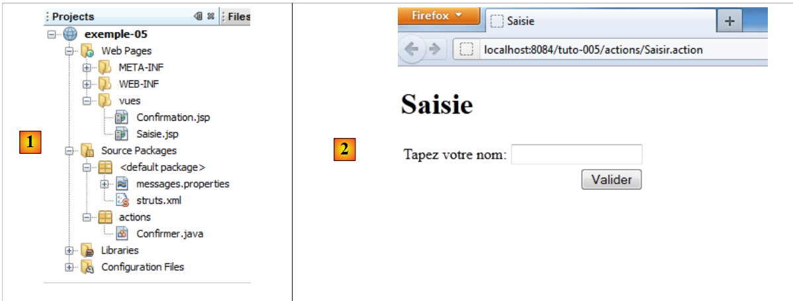
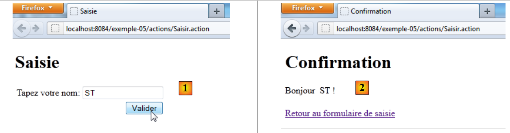

6. Exemple 05 – Le formulaire de saisie
Nous introduisons sur un exemple simple la notion de formulaire de saisie.
6.1. Le projet Netbeans
 |
En [1], le projet :
- les vues [Saisie.JSP], [Confirmation.JSP]
- le fichier de configuration [struts.xml]
- le fichier des messages [messages.properties]
- l'action [Confirmer.java]
En [2], la page de saisie
6.2. Configuration
Le fichier [struts.xml] est le suivant :
<?xml version="1.0" encoding="UTF-8" ?>
<!DOCTYPE struts PUBLIC
"-//Apache Software Foundation//DTD Struts Configuration 2.0//EN"
"http://struts.apache.org/dtds/struts-2.0.dtd">
<struts>
<!-- internationalisation -->
<constant name="struts.custom.i18n.resources" value="messages" />
<!-- package default -->
<package name="default" namespace="/" extends="struts-default">
<default-action-ref name="index" />
<action name="index">
<result type="redirectAction">
<param name="actionName">Saisir</param>
<param name="namespace">/actions</param>
</result>
</action>
</package>
<!-- package actions -->
<package name="actions" namespace="/actions" extends="struts-default">
<action name="Saisir">
<result name="success">/vues/Saisie.JSP</result>
</action>
<action name="Confirmer" class="actions.Confirmer">
<result name="success">/vues/Confirmation.JSP</result>
</action>
</package>
</struts>
- ligne 20 : le package des actions d'URL /actions/Action.
- lignes 21-23 : définissent l'action [Saisir]. Aucune classe ne lui est associée. La réponse est toujours la vue [/vues/Saisie.JSP]
- lignes 24-26 : définissent l'action [Confirmer]. La classe [actions.Confirmer] lui est associée. La réponse est toujours la vue [/vues/Confirmation.JSP]
6.3. L'action [Confirmer]
Son code est le suivant :
package actions;
import com.opensymphony.xwork2.ActionSupport;
public class Confirmer extends ActionSupport{
// modèle
private String nom;
// getters et setters
public String getNom() {
return nom;
}
public void setNom(String nom) {
this.nom = nom;
}
}
La classe n'a qu'un champ, celui de la ligne 8 avec ses get / set.
6.4. Le fichier des messages
Le contenu de [messages.properties] est le suivant :
saisie.texte=Formulaire de saisie
saisie.titre1=Saisie
saisie.titre2=Saisie
saisie.libelle=Tapez votre nom
saisie.valider=Valider
confirm.titre1=Confirmation
confirm.titre2=Confirmation
confirm.texte=Bonjour
confirm.retour=Retour au formulaire de saisie
Ces clés de messages sont utilisées dans les deux vues [Saisie.JSP] et [Confirmation.JSP].
6.5. Les vues
6.5.1. La vue [Saisie.JSP]
C'est visuellement la suivante :
 |
Son code source est le suivant :
<%@page contentType="text/html" pageEncoding="UTF-8"%>
<%@ taglib prefix="s" uri="/struts-tags" %>
<!DOCTYPE html>
<html>
<head>
<meta http-equiv="Content-Type" content="text/html; charset=UTF-8">
<title><s:text name="saisie.titre1"/></title>
</head>
<body>
<h1><s:text name="saisie.titre2"/></h1>
<s:form action="Confirmer">
<s:textfield key="saisie.libelle" name="nom"/>
<s:submit key="saisie.valider" action="Confirmer"/>
</s:form>
</body>
</html>
- ligne 7 : affiche le message de clé saisie.titre1 (Saisie) [1].
- ligne 10 : affiche le message de clé saisie.titre2 (Saisie) [2].
- lignes 11, 14 : la balise <s:form> introduit un formulaire Html. Toutes les saisies à l'intérieur de ce formulaire seront envoyées au serveur web. On dit qu'elles sont postées, car l'opération Http qui intervient dans cet envoi de données au serveur s'appelle POST. Les données envoyées le sont sous forme de chaîne de caractères param1=valeur1¶m2=valeur2&... Nous avons déjà rencontré cette chaîne paragraphe 3.5 dans l'exemple 02. Dans les deux cas, la chaîne des paramètres est traitée de la même façon par Struts 2. Les valeurs valeuri des paramètres parami sont injectées dans l'action exécutée, dans des champs portant les mêmes noms que les paramètres parami. A qui sont envoyées les données postées ? Par défaut, à l'action qui a affiché le formulaire, ici l'action Saisir [5]. On peut également utiliser l'attribut action pour préciser une autre action, ici l'action [Confirmer].
- ligne 12 : la balise <s:textfield ...> affiche le champ de saisie [3]. Son attribut key désigne la clé du libellé à afficher à gauche du champ de saisie. Le libellé est donc cherché dans le fichier [messages.properties]. L'attribut name est le nom du paramètre qui sera posté. La valeur associée à ce paramètre sera le texte saisi dans le champ de saisie.
- ligne 13 : la balise <s:submit ...> affiche le bouton [4]. Son attribut key désigne la clé du libellé à afficher sur le bouton. Le libellé est donc cherché dans le fichier [messages.properties]. Un bouton de type submit provoque le POST du formulaire vers une action. Nous avons dit plus haut que celle-ci était l'action [Confirmer] à cause de l'attribut action de la balise <s:form>. L'attribut action de la balise <s:submit> permet de préciser éventuellement une autre action. Ici nous avons remis l'action [Confirmer]. Le bouton a un nom de paramètre par défaut : action:nom_action, ici action:Confirmer. La valeur associée à ce paramètre est le libellé du bouton. Au final, la chaîne de paramètres postée à l'action [Confirmer] lorsque l'utilisateur cliquera sur le bouton [Valider] sera :
?nom=xx&action:Confirmer=Valider.
où xx est le texte saisi par l'utilisateur dans le champ de saisie.
6.5.2. La vue [Confirmation.JSP]
C'est visuellement la suivante :
 |
Nous entrons un nom et validons la page de saisie. Nous obtenons alors la réponse [1], celle de la vue [Confirmation.JSP]. L'URL affichée en [2] est celle de l'action [Confirmer]. Dans l'exemple ci-dessus, la chaîne de caractères suivante a été postée :
Le paramètre action:Confirmer permet à Struts 2 d'orienter la requête vers la bonne action, ici l'action [Confirmer]. La valeur du paramètre nom sera alors injectée dans le champ nom de l'action [Confirmer].
Le code source de l'action [Confirmation.JSP] est le suivant :
<%@page contentType="text/html" pageEncoding="UTF-8"%>
<%@ taglib prefix="s" uri="/struts-tags" %>
<!DOCTYPE html>
<html>
<head>
<meta http-equiv="Content-Type" content="text/html; charset=UTF-8">
<title><s:text name="confirm.titre1"/></title>
</head>
<body>
<h1><s:text name="confirm.titre2"/></h1>
<s:text name="confirm.texte"/>
<s:property value="nom"/> !
<br/><br/>
<a href="<s:url action="Saisir"/>"><s:text name="confirm.retour"/></a>
</body>
</html>
- ligne 7 : affiche le libellé de clé confirm.titre1 trouvé dans le fichier des messages [1]
- ligne 10 : affiche le libellé de clé confirm.titre2 trouvé dans le fichier des messages [3]
- ligne 12 : affiche la propriété nom de l'action [Confirmer] qui a été exécutée.
- ligne 14 : crée un lien vers l'action [Saisir]. La balise <s:url>, déjà rencontrée, va être générée à partir de l'URL [2] du navigateur. Le chemin sera celui de [2] http://localhost:8084/exemple-05/actions et l'action celle de l'attribut action, ici Saisir. L'URL du lien sera donc http://localhost:8084/exemple-05/actions/Saisir.action. Le texte du lien sera le libellé associé à la clé confirm.retour [4].
6.6. Les tests
Voici deux requêtes :
 |
En [1], on saisit un nom et on valide. En [2], la page de confirmation.
 |
En [3] on suit le lien de retour au formulaire. En [4] le résultat. Tout a été expliqué, sauf le passage de [3] à [4]. Pourquoi ne retrouve-t-on pas dans [4], le nom qu'on avait saisi ?
Le lien en [3] est un lien vers l'URL [http://localhost:8084/exemple-05/actions/Saisir.action]. L'action [Saisir] est donc exécutée. Regardons sa configuration dans [struts.xml] :
<package name="actions" namespace="/actions" extends="struts-default">
<action name="Saisir">
<result name="success">/vues/Saisie.JSP</result>
</action>
<action name="Confirmer" class="actions.Confirmer">
<result name="success">/vues/Confirmation.JSP</result>
</action>
</package>
L'action [Saisir] n'est pas associée à une action. Donc la vue [Saisie.JSP] est immédiatement affichée. Regardons le code de cette vue :
<%@page contentType="text/html" pageEncoding="UTF-8"%>
<%@ taglib prefix="s" uri="/struts-tags" %>
<!DOCTYPE html>
<html>
<head>
<meta http-equiv="Content-Type" content="text/html; charset=UTF-8">
<title><s:text name="saisie.titre1"/></title>
</head>
<body>
<h1><s:text name="saisie.titre2"/></h1>
<s:form>
<s:textfield key="saisie.libelle" name="nom"/>
<s:submit key="saisie.valider" action="Confirmer"/>
</s:form>
</body>
</html>
En ligne 12, le champ de saisie est affiché. Son contenu est initialisé avec la propriété nom (name). Rappelons ce qui avait été écrit plus haut sur le fonctionnement de la balise <s:property> :
La balise <s:property name="propriété"> permet d'écrire la valeur d'une propriété d'un objet appelé ActionContext. On trouve dans cet objet :
- les propriétés de la classe associée à l'action qui a été exécutée.
- les attributs de la requête courante notés <s:property name="#request['clé']">
- les attributs de la session de l'utilisateur notés <s:property name="#session['clé']">
- les attributs de l'application elle-même notés <s:property name="#application['clé']">
- les paramètres envoyés par le navigateur client notés <s:property name="#parameters['clé']">
- la notation <s:property name="#attr['clé']"> affiche la valeur d'un objet cherché dans la page, la requête, la session, l'application dans cet ordre.
On est ici dans le cas 1. L'action [Saisir] n'a pas de classe associée. La propriété nom n'existe donc pas. Une chaîne vide est alors affichée dans le champ de saisie.
Pour afficher en [4] le nom qui a été saisi en [1], nous utiliserons la session de l'utilisateur.